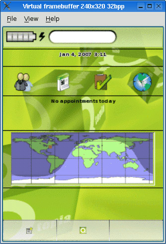

Developing software to run on mobile devices such as PDAs and mobile phones can be very challenging because embedded systems generally have slower processors, less permanent storage (flash memory or hard disk), less memory, and smaller displays than desktop computers.
Qt/Embedded Linux (also called Qtopia Core) is an edition of Qt optimized for embedded Linux. Qt/Embedded Linux provides the same API and tools as the desktop versions of Qt (Qt/Windows, Qt/X11, and Qt/Mac), and adds the classes and tools necessary for embedded programming. Through dual licensing, it is available for both open source and commercial development.
Qt/Embedded Linux can run on any hardware that runs Linux—including Intel x86, MIPS, ARM, StrongARM, Motorola/Freescale 68000, and PowerPC architectures.[*] Unlike Qt/X11, it does not need the X Window System; instead, it implements its own window system, QWS, enabling significant storage and memory savings. To reduce its memory footprint even more, Qt/Embedded Linux can be recompiled to exclude unused features. If the applications and components used on a device are known in advance, they can be compiled together into a single executable that links statically against the Qt/Embedded Linux libraries.
[*] Starting with version 4.4, Qt is expected to run on Windows CE as well.
Qt/Embedded Linux also benefits from various features that are also part of the desktop versions of Qt, including the extensive use of implicit data sharing ("copy on write") as a memory-saving technique, support for custom widget styles through QStyle, and a layout system that adapts to make the best use of the available screen space.
Qt/Embedded Linux forms the basis of Trolltech's embedded offering, which also includes Qtopia Platform, Qtopia PDA, and Qtopia Phone. These provide classes and applications designed specifically for portable devices and can be integrated with several third-party Java virtual machines.
Qt/Embedded Linux applications can be developed on any platform equipped with an appropriate tool chain. The most common option is to build a GNU C++ cross-compiler on a Unix system. This process is simplified by a script and a set of patches provided by Dan Kegel at http://kegel.com/crosstool/. For this chapter, we have used the Qtopia Open Source Edition version 4.2 available from http://www.trolltech.com/products/qtopia/opensource/. This edition is suitable only for Linux and includes its own copy of Qt/Embedded Linux 4.2, along with additional tools to support Qtopia programming on a desktop PC.
Qt/Embedded Linux's configuration system supports cross-compiling, through the configure script's -embedded and -xplatform options. For example, to build for the ARM architecture we would type
./configure -embedded arm -xplatform qws/linux-arm-g++
We can create custom configurations by adding new files to Qt's mkspecs/qws directory.
Qt/Embedded Linux draws directly to the Linux framebuffer (the memory area associated with the video display). The virtual framebuffer shown in Figure 24.1 is an X11 application that simulates, pixel for pixel, the actual framebuffer. To access the framebuffer, you might need to grant write permissions to the /dev/fb0 device.

To run Qt/Embedded Linux applications, we must first start one process to act as a GUI server. The server is responsible for allocating screen regions to clients and for generating mouse and keyboard events. Any Qt/Embedded Linux application can become a server by specifying -qws on its command line or by passing QApplication::GuiServer as the third parameter to the QApplication constructor.
Client applications communicate with the Qt/Embedded Linux server using shared memory and Unix pipes. Behind the scenes, the clients draw themselves into the Linux framebuffer and are responsible for painting their own window decorations.
Clients can communicate with each other using QCOP—the Qt Communication Protocol. A client can listen on a named channel by creating a QCopChannel object and connecting to its received() signal. For example:
QCopChannel *channel = new QCopChannel("System", this);
connect(channel, SIGNAL(received(const QString &, const QByteArray &)),
this, SLOT(received(const QString &, const QByteArray &)));A QCOP message consists of a name and an optional QByteArray. The static QCopChannel::send() function broadcasts a message on a channel. For example:
QByteArray data;
QDataStream out(&data, QIODevice::WriteOnly);
out << QDateTime::currentDateTime();
QCopChannel::send("System", "clockSkew(QDateTime)", data);The preceding example illustrates a common idiom: We encode the data using QDataStream, and we mangle the data format in the message name as though it were a C++ function to ensure that receiver interprets the QByteArray correctly.
Various environment variables affect Qt/Embedded Linux applications. The most important ones are QWS_MOUSE_PROTO and QWS_KEYBOARD, which specify the mouse device and the keyboard type. See http://doc.trolltech.com/4.2/qtopiacore-envvars.html for a complete list of environment variables.
If we use Unix as our development platform, we can test the application using the Qt virtual framebuffer (qvfb), an X11 application that simulates the actual framebuffer. This accelerates the development cycle considerably. To enable virtual buffer support in Qt/Embedded Linux, pass the -qvfb option to the configure script. Be aware that this option is not intended for production use. The virtual framebuffer application is located in tools/qvfb and can be invoked as follows:
qvfb -width 320 -height 480 -depth 32
An alternative to using the X11-specific virtual framebuffer is to use VNC (Virtual Network Computing) to run the applications remotely. To enable VNC support in Qt/Embedded Linux, pass the -qt-gfx-vnc option to configure. Then launch your Qt/Embedded Linux applications with the -display VNC:0 command-line option and run a VNC client pointing at the host on which your applications are running. The display size and bit depth can be specified by setting the QWS_SIZE and QWS_DEPTH environment variables on the host that runs the Qt/Embedded Linux applications (e.g., QWS_SIZE=320x480 and QWS_DEPTH=32).